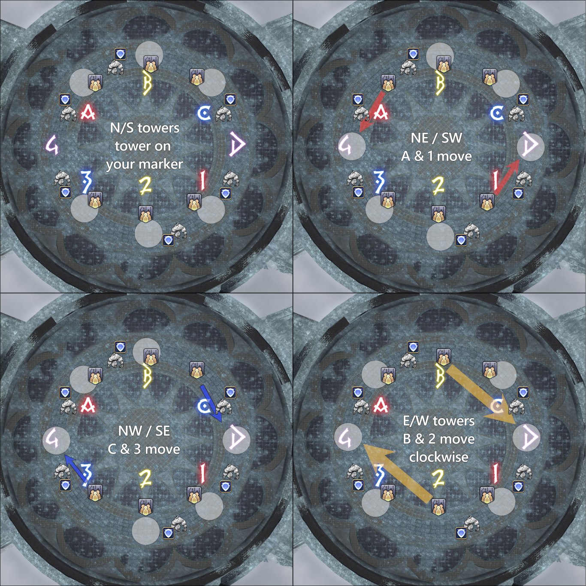

Marble Dragon
"This golem must surely be considered among the masterworks of Amdapori craftsmanship. Serving to protect the Tower of Blood from trespassers, its movements and ferocity match that of a living, breathing dragon─an impressive feat considering the fact this guardian is naught but aether-imbued marble. Given the startling attention to detail, the creator must have visited Dravania to observe their scaled muses firsthand."
Overview
The core mechanic throughout: water circles are inactive (standing in them is harmless). Ice mechanics are active and must be avoided. When ice contacts water, the water freezes, dealing damage to anyone in it, and becomes an active ice AoE that then resolves.
Fight Timeline
Dread Deluge
- Targets the 6 highest players on the aggro list, applying a heavy-hitting DoT that requires mitigation. It does not cleave, so it is safe to remain with the group.
- This happens three times throughout the fight. Two busters occur in a short window, and standard tanks do not have enough mitigation to survive both back-to-back.
- Use all of your normal mitigations for the first buster.
- Use Phantom Guard (90% mitigation) for the second.
Draconiform Motion
- Stay stacked with the entire raid until the cast begins. Ignore positionals for this mechanic.
- The boss targets a random player with a 90° front and back conal.
- As soon as the cast starts, move to the sides to avoid both conals.
Imitation Rain & Imitation Icicle / Frigid Twister
Each cast of Imitation Rain spawns a set number of water puddles around the arena. Water puddles are harmless and safe to walk through. They only become dangerous when hit by an ice AoE, which freezes them and triggers their explosion.
- Imitation Icicle: Spawns ice puddles that explode shortly after, detonating nearby water puddles.
- Frigid Twister: Spawns two ice tornados that rotate clockwise or counterclockwise, detonating water puddles as they travel.
There are three types of water puddles, each exploding differently when frozen:
- Circle AoE: Plain water puddles with no extra animation. When frozen, they explode in a circle larger than the original puddle.
- Cross AoE: Water puddles with small “shark-fin”-like animations. When frozen, they fire lines outward in the direction the fins are pointing.
- Tower: Smaller water puddles with a “tornado” animation in the centre. When frozen, they become a 4-person tower that must be soaked.
Add Phase: Withering Eternity
The boss becomes untargetable. One Cross AoE puddle spawns in the middle of the arena, alongside two groups of three tower puddles at the edges. Six Ice Golems spawn, three to the north and three to the south. Each party is responsible for one add.
- The boss dives through the middle puddles on each side and the cross puddle, freezing them.
- Parties soak the towers while tanks keep their adds separated at the edge.
- Focus damage on the middle add first.
- After the cross AoE resolves, move to soak the side towers.
- This sequence repeats twice.
Shortly after, six Ice Sprites spawn and tether to the boss. Each party must focus their assigned Sprite down.
- The boss remains invulnerable until all Sprites are defeated.
- A Phantom Bard can use Romeo's Ballad to stop the Sprites.

Add Phase: Party
- Go to your assigned marker and attack the add that spawns there.
- Two sets of three towers appear alongside the adds.
- If your marker has a tower on it, that tower is yours to soak.
- If your marker does not have a tower:
- Parties B / 2: Go clockwise to the next purple marker (4 / D).
- Everyone else: Go to the closest purple marker (4 / D).
- Check for the middle tower and dodge the dragon dive.
- Parties assigned to the middle tower: soak it.
- Dodge the cross AoE through the remaining towers.
- Parties assigned to outer towers: soak your tower.
- Return to your marker afterwards. This sequence repeats twice.
Add Phase: Tank
- The main tank of each party picks up one add and brings it to their assigned marker.
- Keep the adds separated and stay at the edge of the arena.
- Do not join the towers.
- Dodge the boss dives and the water puddle cleaves.
- Stay near your marker throughout the phase.
Wicked Water
- A portion of the raid will be targeted with a red marker above their head.
- Once the marker disappears, those players receive a Wicked Water and a Throttle debuff, each with a 45-second timer.
- Wicked Water: Reduces movement speed.
- Throttle: Causes KO when the timer expires.
- To remove Wicked Water, you must be hit by a water puddle explosion.
- This will freeze you in place. The raid must break you free.
- Once freed, Throttle falls off as well.
Towers during Imitation Rain 4
Your assigned marker determines which tower is yours. Use the images below as a reference.
- Parties A, C, 1, and 3: Always take the tower closest to your marker.
- Parties B and 2 flex to the middle towers.
- Party B: Always takes the middle tower towards a letter marker.
- Party 2: Always takes the middle tower towards a number marker.

How do we resolve mechanics?
- Draconiform Motion will generally be baited on the 2 marker.
- During Imitation Rain 4, the second Draconiform Motion will be baited wherever the raid ends up, either North/South or East/West.
- Dread Deluge mitigation order for Phantom Knights:
- First tankbuster: All of your normal tank mitigations, excluding your invulnerability.
- Second tankbuster: Phantom Guard (90%) and your short 25-second mitigation.
- Third tankbuster: All of your mitigations, including Phantom Guard.